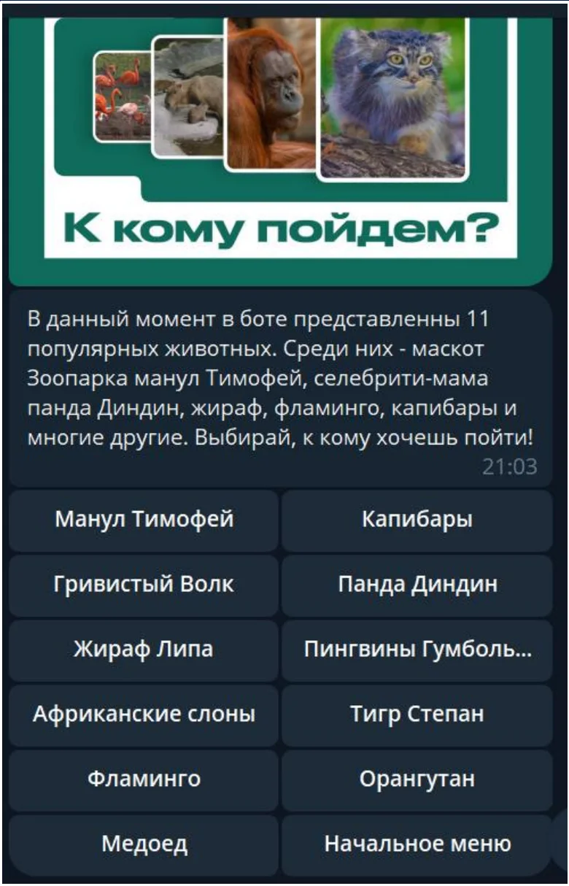
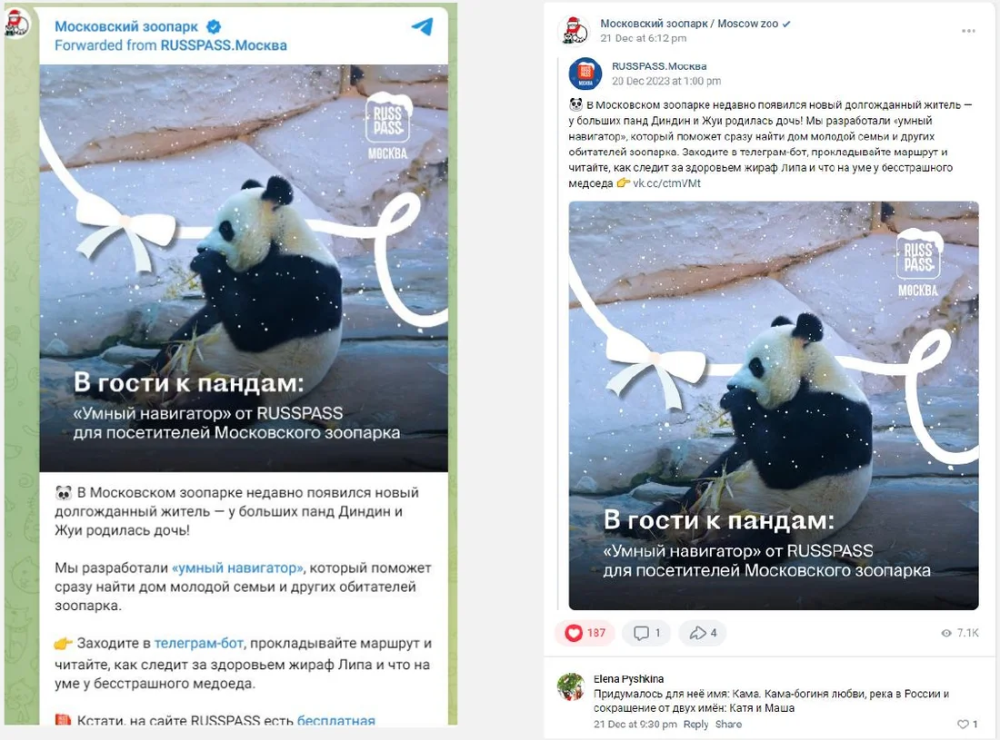
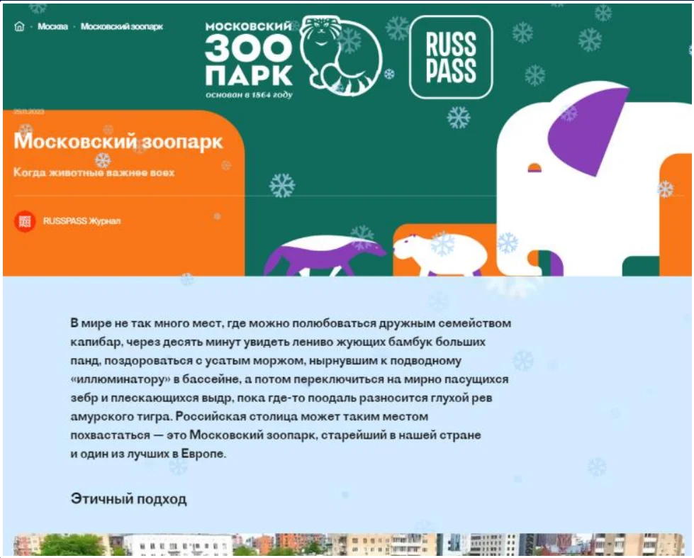

Спецпроект RUSSPASS и Московского зоопарка. Telegram-бот показывает дорогу к вольерам 11 животных, среди них манул Тимофей и панда Диндин с детёнышем, и рассказывает про каждого. Концепцию, тексты и код на Python сделал я.
За первую неделю, 19–27 декабря 2023, о боте вышло 55 публикаций в СМИ с охватом до 9 млн показов и больше 1 300 публикаций в соцсетях с охватом до 2,5 млн. О боте написал mos.ru.



Хотите обсудить роль?
Написать в Telegram